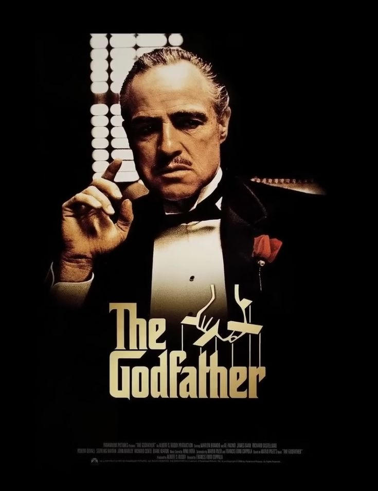

 [1500 x 2101].jpg)
|
Francis Coppola Francis Ford Coppola is an American filmmaker. Considered one of the leading figures of the New Hollywood era as well as one of the pioneers of the gangster film genre, Coppola is widely regarded as one of the greatest and most influential filmmakers in the history of cinema Born:7 April 1939 (age 86 years), Detroit, Michigan, United States Awards: AFI Life Achievement Award |
||
| MOVIES: |  |
|
|||
|---|---|---|---|---|---|